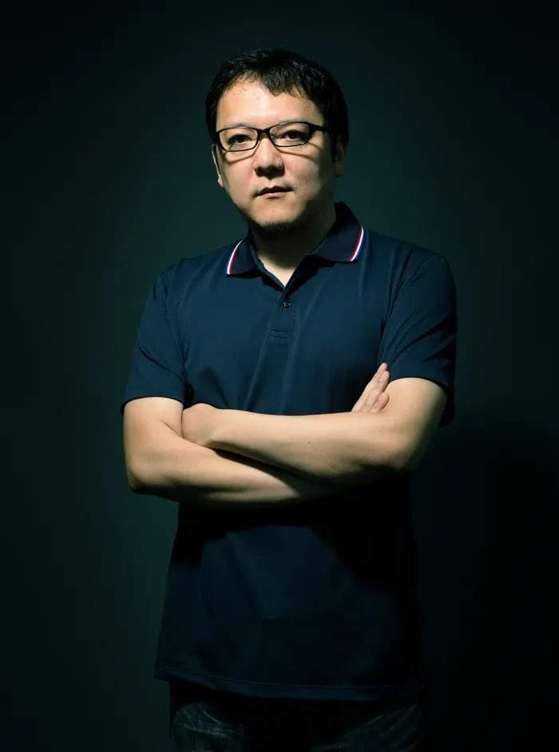
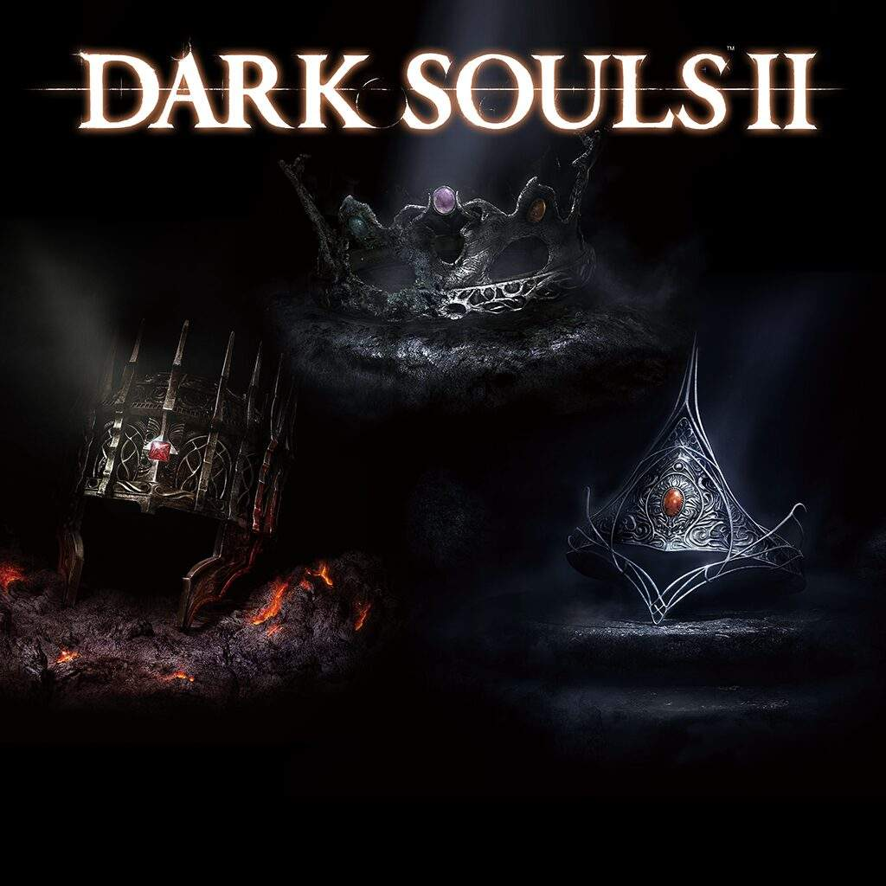
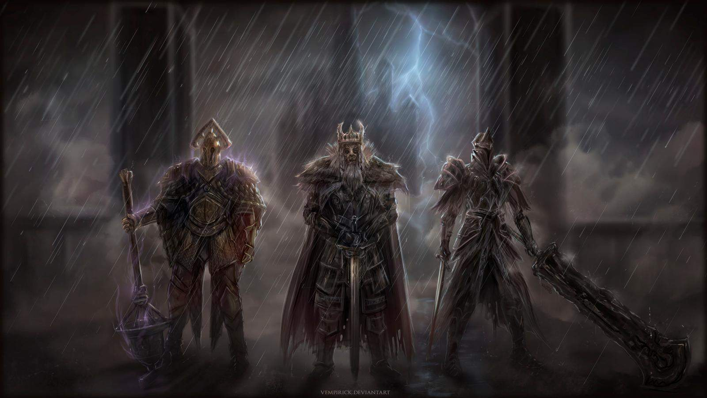

Это Ost из игры для атмосферы
Навигация:
Добро пожаловать в мир
"Dark Souls 2"
Игровой процесс
 Так же как и её предшественница – Dark Souls, игра выполнена в жанре action RPG в сеттинге средневековья и тёмного фэнтези. Мир разбит на несколько десятков подземелий, замков и прочих лабиринтов, наполненных разнообразными опасными монстрами и боссами. Здесь Вам предстоит прокачать своего персонажа, найти новое оружие, броню и магию.
Так же как и её предшественница – Dark Souls, игра выполнена в жанре action RPG в сеттинге средневековья и тёмного фэнтези. Мир разбит на несколько десятков подземелий, замков и прочих лабиринтов, наполненных разнообразными опасными монстрами и боссами. Здесь Вам предстоит прокачать своего персонажа, найти новое оружие, броню и магию.
Одной из ключевых механик является смерть персонажа. Поскольку здесь нет опций создания сохранений, при смерти Вы будете перемещены к последнему чекпоинту, часть убитых врагов воскреснет и возникнет риск потери неиcпользованного опыта.
Другие характерные особенности у игры – это сетевые опции, где игроки могут непосредственно помогать, либо мешать друг другу в прохождении.
Разработка
Анонс игры состоялся на церемонии награждения лучших игр года "Spike Video Game Awards" 7 декабря 2012 года. Именно там был продемонстрирован первый трейлер будущей игры - "Of Masks and Dragons".

Геймдизайнер Хидэтака Миядзаки, который работал над предыдущими играми серии "Souls" в качестве руководителя разработки и продюсера, не принимал прямого участия в работе над Dark Souls II, заняв пост супервайзера проекта. Место директоров заняли Томохиро Шибуя (Tomohiro Shibuya) и Юи Танимура (Yui Tanimura). Сам Миядзаки отметил, что целиком и полностью доверяет новым руководителям и разделяет их взгляды. Выступая теперь в качестве наблюдателя, он сможет открыто говорить, что ему нравится и не нравится в процессе разработки игры, однако принимать участие в проработке дизайна игрового мира, монстров, оружия и т.п. он не будет. Также Миядзаки объявил, что сюжет Dark Souls II не имеет прямой связи с первой частью, но разворачивается в том же мире.
Из-за недостаточно мощных технических характеристик консолей седьмого поколения был задействован улучшенный движок Havok, уже известный по первой части игры, а не новый, как планировалось изначально.
5 сентября 2013 г. анонсирован закрытый бета-тест игры. Первый этап тестирования для Северной Америки, Европы и Австралии был запланирован на 12 октября, второй - на 27 октября. Игрокам была предоставлена возможность выбрать один из 6 классов персонажей и полностью исследовать одну из локаций - Рощу Охотника. Помимо показа геймплея и базовой механики игры, бета также демонстрировала возможности сетевой игры - призыв белых фантомов для кооперативного прохождения локации, систему оставления и оценки сообщений, вторжения в миры других игроков при помощи треснувшего красного ока. Некоторые элементы, продемонстрированные в бета-тесте, были переработаны в окончательной версии игры, в частности изменены и стартовые классы.
На PS3 и Xbox 360 игра вышла 11 марта 2014 года в Северной Америке и 14 марта в Европе. PC-версия была выпущена в свет только 25 апреля того же года, но взамен за ожидание, разработчики предоставили более стабильные FPS, текстуры высокого качества и приспособленное для клавиатуры и мыши управление.
Дополнения
Несмотря на то, что изначально разработчики заявляли о том, что для Dark Souls II не планируется выпускать дополнительный контент, 4 июня 2014 г. BANDAI NAMCO и FromSoftware анонсировали выход трёх дополнений для оригинальной игры, объединенных общей тематикой и названием - "The Lost Crowns" (рус. "Потерянные короны").
В ходе прохождения DLC игроку предстоит отправиться в нелегкое путешествие в ранее неизведанные земли, чтобы найти потерянные короны. Каждая глава трилогии посвящена поиску короны одного из королей: Топлого короля (англ. Sunken King), Старого Железного Короля (англ. Old Iron King) и Короля Слоновой Кости (англ. Ivory King). Также было объявлено, что игроков ожидают несколько новых локаций, доступных для исследования, новые противники и сложные боссы, а также предметы, описание которых позволит лучше погрузиться в мир Dark Souls II.

Crown of the Sunken King. Дата выхода - 22 июля 2014 г. (ПК и Xbox) и 23 июля 2014 г. (PlayStation3).
Crown of the Old Iron King. Дата выхода - 26 августа 2014 г. (ПК и Xbox) и 27 августа 2014 г. (PlayStation3).
Crown of the Ivory King. Дата выхода - 30 сентября 2014 г. (ПК и Xbox) и 1 октября 2014 г. (PlayStation3).
25 ноября 2014 г. состоялся анонс переиздания Dark Souls II, которое получило название "Dark Souls II: Scholar of the First Sin".
Изначально Dark Souls II не была выпущена для консолей нового поколения - Playstation 4 и Xbox One. Переиздание призвано исправить этот недостаток. Релиз обновленной версии игры состоялся 3 апреля 2015 года в Европе и 7 апреля в США. Переиздание также доступно и для владельцев Xbox 360, Playstaion 3 и PC (DirectX 9/DirectX 11).
| Все изменения оригинальной игры | |||||
| Новые неигровые персонажи, сюжетные линии и события. | Дополненные описания предметов в углубленном мире Dark Souls. | Изменения в подборе противников, параметрах, балансе. | Новые противники, изменение в дизайне игрового процесса. | Улучшение графики и производительности. | Увеличение числа онлайн-игроков. |
Сюжет

Возможно, тебе уже доводилось видеть это, например, во сне. Тёмные, заброшенные земли. Место, где души излечат твой беспокойный разум. Ты потеряешь всё. В твоей памяти останется клеймо. Символ проклятия. Печать тьмы. Твоё прошлое. Твоё будущее. Каждый миг. Всё станет уже неважным, заботы останутся в прошлом. Но ты перестанешь быть человеком. Теперь ты - пожиратель душ. Теперь ты - Полый.
Давным-давно, на краю земли, далеко на севере, великий король создал могучее королевство. Его назвали Дранглик. Возможно, тебе знакомо. Хотя нет, откуда тебе знать? Однажды ты придёшь к его обветшалым вратам. Сам не зная, зачем... Как мотылёк, влекомый пламенем свечи. И как у мотылька, твои крылья будут обожжены, но не огнём, а страданием. Раз за разом. Это - твоя судьба. Проклятая судьба.